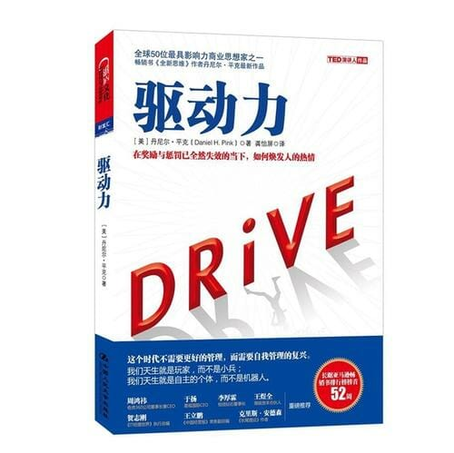

注：【】部分为笔者心得，非原文摘抄。
- 一个人若有意发展并提高儿童、雇员、学生等对象的内在积极性，他就不应该把注意力放在金钱奖励这样的外控系统上。
- 花精力激励人基本上是在浪费时间。如果坐在你车上的人是合适的人，他们会自己激励自己。这是真正的问题就变成了：“为了不让他们消极，你应该用什么方法管理团队？”——吉姆·柯林斯
- 要想提高成绩、提高生产力、鼓励追求卓越，就要奖励好的行为，惩罚坏的行为。
- 以乐为本的内在动机，也就是参与项目时能感受到的创造力是最强大、最常见的动机。
- 内在动机对所有的经济活动都很重要，无法想象人们仅仅或主要被外部刺激因素所驱动。——布鲁诺·弗雷
- 千篇一律的重复性机械劳动（推算型工作）可以外包或者自动化，但涉及艺术、情感及其它内容的探索型工作则不能如此。
- 外部奖励和惩罚（胡萝卜与大棒并用）对推算型工作很适用，但是对探索型工作可能具有破坏性。
- 千篇一律、没什么意思的重复性工作需要管理，而有意思的非重复性工作依靠的则是自我管理。
- 如果你做这个，那我就给你那个，会产生负面效果。因为这种“如果——那么”型的奖励要求人们放弃他们一部分自主权。
- 有形的奖励实际上会对内在激励因素产生消极影响。如果家庭、学校、企业、运动队等关注的是短期目标，选择的是控制人们的行为，它们就会对长期效果造成相当的损害。
- 人们用奖励来提高其他人的积极性，提高某种行为发生的频率，希望能从中获益，但他们经常破坏人们对某种行为的内在积极性，无意中增加了隐性成本。
- 奖励会使人们的关注面变窄，遮蔽他们宽广的视野，让他们没法看到常见事务的新用法。
- 有些艺术家之所以能在绘画和雕刻道路上苦苦追寻，是因为创作本身的快乐而非外部奖励。最终得到外部奖励的人，恰恰是那些最没有动力追求外部奖励的人。
- 当你为别人完成一件作品时，这更像是“工作”而非乐趣。
- 金钱奖励并没有让我们所鼓励的行为增加，反而令其减少。究其原因是：它玷污了这种利他举动，把做善事的内在欲望“挤了出去”。
- 把能否获得外部奖励作为唯一重要目标的问题在于，有些人为了达到目标会选择最快的路线，就算走邪门歪道也在所不惜。
- 目标会导致目光狭隘、出现不道德行为、增加冒险行为、减少合作和内在动机，可能会给机构带来系统性问题。因此，设立目标要谨慎。
- 设立目标除了可能带来具有建设性的努力，也可能引起不道德的行为。
- 金钱奖励和金光闪闪的奖品一开始会带来强烈的愉悦感，但这种感觉很快会烟消云散。为了保持这种感觉，剂量就必须越来越大，用药必须越来越频繁。
- 上瘾者想要快速解决问题，置最终损害于不顾；撒谎者想要更快速出奇制胜，置长远结果于不顾。
- 一旦提供奖励，它就会让人上瘾。有条件的奖励会让代理人下次遇到类似的情况时也期待有奖励，这反过来会迫使委托人一而再再而三地使用奖励。——安东·苏沃洛夫
- 追求目标可能会误入歧途，目标带来的压力可能会令员工短视、关注短期收益，而忽略了可能给机构造成的长期破坏。
- 经济泡沫的本质就是非理性繁荣最终成为受外部激励的短视行为。
- 没有健康的底线，任何类型的动机都难以发挥作用。
- 尽管看得见摸得着的有条件的奖励会破坏内在积极性和创造力，但对于无聊的任务，这些坏处没那么重要，因为根本就没有积极性可以破坏。
- 现在发达的经济体不太以那些推算型、以规则为基础的技能为中心。
- 遵循以下两条附加原则，让激励因素的立足点更加坚实：任何外部奖励都需要是别人预想不到的，而且只有在任务完成后才能给出。
- 不应该给设计师“如果——那么”型奖励。
- 最高层次的创造性是由把奖励视作额外奖金的主体创造的。
- 如果物质奖励是在人们完成一项任务后出其不意地给出的，那么人们比较不容易认为奖励是做这项任务的理由，它对内部积极性造成危害的可能性也比较小。
- 首先，考虑非物质奖励；其次，提供有价值的信息。
- 反馈越注重细节越有效。
- 对于创造性工作来说，如果提供“如果——那么”型奖励，你的立足点就不那么稳固了，使用“既然——那么”型奖励是个更好的选择。当然，最好的做法是既提供“既然——那么”型奖励，又对他们给予赞扬，提供反馈，告知有用的信息。
- 在一个人的工作中，薪水、奖金、福利的位置越显著，就越会扼杀创造性，降低人们的表现水准。
- 任何薪酬问题中最重要的一点就是公平。
- 如果向员工支付的工资比市场需求略高一些，公司就能够吸引到更优秀的人才，减少人才流失，激发生产力，提高员工士气。
- 基本工资更多比有吸引力的奖金结构更能提高绩效，更能增加组织认同感。
- 采用大量能够反映工作总体表现的衡量标准，通常能够把产生反效果的“如果——那么”型奖励转化为可燃的“既然——那么”型奖励。
- 如果你相信“大众皆平庸”，那么平庸就会成为无法逾越的天花板。你需要倾听内心的声音，你的能量之源来自外在动机还是内在动机？自由、挑战与担当是你的主要动机吗？你是更多关注行为带来的外在奖励，还是更多关注行为内在的成就感？
- 如果我们天性中有什么东西是基础性的，那这个东西就是感兴趣的能力。
- 自我决定理论认为人类有三种内在需求：能力的需求（competence）、自主性的需求（autonomy）和归属的需求（relatedness）。
- 奖励越不明显效果越好，用奖励来激励人们的时候也是人们最没干劲的时候。
- 工作重点应该是营造一个能够激发各种内在心理需求的环境。
- 单词固然重要，但字母也同样不可忽视。
- 心脏病高危人群身上存在一些相似点：大多具有特定的复杂人格特征，其中包括过强的竞争意识、激进、缺乏耐心等，大多有一种时间紧迫的焦虑感。表现出这种行为模式的病人似乎会陷入无休止的漫长争斗中，与自己斗，与别人斗，与环境斗，与时间斗，与生活斗，而且这种斗争经常徒劳无果。
- 一旦人们学习了基本的行为方式和态度，能够把它们作为背景知识，他们的积极性和最终成绩都会提升。
- 【如果用一句话形容你的一生，你希望是哪一句？】
- 遵照下面几个步骤，反复做上 10 年，也许你就能成为大师：
- 刻意练习的目标是提高成绩；
- 重复，重复，再重复；
- 想方设法获得批评性意见；
- 严加关注自己的弱项；
- 为身心俱废做好准备。
- 像僧人一样镇定专注。
- 只关注结果的工作环境（ROWE，Result-only Work Environment）：是指员工没有日程表的办公，员工不需要在某个时间待在办公室，而且任何时候不在办公室都没有问题，他们只需要把工作完成就好。
- ROWE 的基本原则：无论职位高低，所有人都停止做任何浪费自己时间、客户时间和公司时间的事情；员工有选择任何他们想要的工作方式的自由；每个会议都可参加可不参加；没有工作日程表。
- 充满好奇心、倾向于自我管理才是我们的本性。
- 也许管理不是对我们所谓被动、懒惰的本性才去的应对措施，而是改变我们的默认设置、造成被动、懒惰这种状态的力量之一。
- 自我管理：是指随着个人寿命的提高以及工作稳定性的下降，个人不得不认真考虑他们的强项是什么，他们能贡献些什么，以及如何提高自己的表现水准。
- 自主不同于独立，它是指有选择权的行动，其含义是我们既可以自主又可以愉快地与人互相依靠。
- 自主的感觉能够对个体行为的表现水准和态度施加强大的影响力。
- 知识工作者决定自己的工作内容及其结果非常必要，这是因为他们必须自主。工作者应该仔细思考他们的工作规划，并按照这个规划执行。我应该关注哪个地方？我负责的事情应该有怎样的结果？最后期限应该是什么时候？
- 这个时代不需要更好的管理，它需要自我管理的复兴。
- 涵盖工作 4 个方面的自主权：做什么样的工作，什么时候做，怎么做，跟谁做。
- 对最富有创造力的团队来说，终极自由就是试验自己的新想法。一些怀疑者坚持认为创新代价高昂，但从长期来看，创新物美价廉，中庸才昂贵，而自主能够当做解毒剂。
- 过去，工作首先由投入时间定义，其次才有得到的结果定义。我们需要跳过这个模式。无论你做的是什么生意，现在就是扔掉过时的牵狗绳、打卡钟，还有老旧的工业时代思维的时候了。
- 鼓励人们去贡献，而不仅仅是来上班，榨干自己的一天。
- 艺术的艺术在于去除局限。
- 在自发组建的团队中工作的人，比在成员早已固定的团队中工作的人满足感更强。
- 不同的个体有不同的需求，因此对雇主来说，最好的策略是弄清楚每个人眼里哪项自主最重要。
- 领导应多提出些问题，少要求写答案；要对话，要争论，但不要强制；做彻底的事后分析，不要相互指责；让员工和客户发现问题时及时将出来。
- 鼓励自主并不是鼓励不负责任。
- 人们想要负责任，而确保他们对自己的工作内容、工作时间、工作方法、工作团队有控制权，是达到这个目标的必经之路。
- 人类历史的进程总是向更加自由的方向迈进，因为我们的天性推动着它朝这个方向前进。
- 只有投入才能带来专精。
- 专精，是指把想做的事情做得越来越好的欲望。
- 服从让我们能够撑过白天，但投入能让你撑过晚上。
- 想进行脑力挑战的渴望越强烈，也就是说想掌握一些新东西或者有意思的东西的要求越迫切，生产力就越强。
- 工作让人崩溃的原因之一是人们必须做的事情和他们能够做的事情之间不匹配。如果他们必须做的事情超过了他们的能力范围，结果就会是焦虑。如果他们必须做的事情达不到他们的能力范围，结果就会是厌倦。
- 很多特质以前被认为是天分，但实际上它们是至少 10 年的高强度练习的结果。——安德斯·埃里克森
- 挑选一个即便最平凡、最乏味的部分你也喜欢的职业，这样就能一直开心。——威尔·修兹
- 努力是赋予人生意义的事情之一。努力意味着你在乎一些东西，它们对你很重要，你愿意为它而努力。如果你不愿意珍视任何事物，不愿意全身心投入为它们而努力，那么生命将会是贫瘠的存在。——卡罗尔·德韦克
- 根据《精神疾病诊断和统计手册》（Diagnostic and Statistical Manual of Mental Disorders, DSM-IV），以下 6 个症状中若出现了任何 3 个就表明可能有严重的广泛性焦虑障碍（Generalized Anxiety Disor-der）问题：
- 焦躁不安或神经紧张或心烦意乱；
- 容易疲惫；
- 难以集中注意力或者脑子一片空白；
- 易怒；
- 肌肉紧张；
- 睡眠障碍。
- 让员工参与目标的制定。
- 用非控制性的语言。
- 人类天生就是目的找寻者，这是一项比他们自己更伟大、更长久的事业。
- 变老比年轻容易，因为选择要少得多。
- 目的为生活提供了活性能量。只有那些想做超越自己能力范围事情的人，才会在人类的发展进程中取胜。
- 财富最大化作为一种情绪催化剂，缺乏调动人类全部精力的能量。
- 一个人的生命价值，可以用他对处于逆境中的人的影响力来衡量。既然死亡对每个人来说都是一件确定的事情，那么从出生到死亡这段时间内，一个人的生活质量就变得更为重要了。
- 借助自主的力量来实现目的最大化。
- 满足不仅仅取决于有目标，而且取决于有正确的目标。
- 如果一个人感觉不到自己从属于更伟大、更长久的事物，那他就没法过上真正精彩的生活。
- 利润动机是取得成就的重要助燃剂，但它不是唯一的动机，也不是最重要的一个。
- 一个健康的社会、一个健康的商业机构是从目的开始的，它们把利润看做朝这个目的进发的方式，或者是取得成就后让人愉快的副产品。
- 我们并非天生被动顺从，我们知道人生中最富足的体验不是得到别人的认可，而是能够倾听自己的声音：做重要的事情，做好它，为了达成自己的事业而努力。